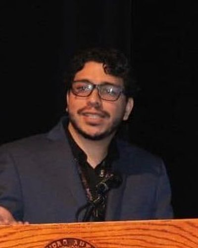

Juan Alberto Ríos Rodríguez
Médico e investigador en oncología clínica y en inteligencia artificial aplicada a la salud
Médico cirujano por la Universidad Autónoma de Ciudad Juárez. Maestría en Ciencias Biomédicas por el Tecnológico de Monterrey. Afiliado al programa de doctorado en Ciencias Biomédicas de la misma institución. Especialización en inteligencia artificial aplicada a la salud por el IPyCIT. Asesor externo SIRELCIS: análisis y asesoría en tesis médicas.
Líneas de investigación
Salud pública de precisión, radiómica e inteligencia artificial aplicada al cáncer.
Publicaciones selectas
- Uncovering novel germline variants associated with testicular germ cell tumors by exome sequencingNAR Cancer, 2026 · FI 4.6 · CiteScore 5.9
- Metabolic profile and skeletal muscle as predictors of survival in testicular germ cell tumorsThe Oncologist, 2026 · FI 4.7 · CiteScore 6.8
- Understanding sociodemographic factors among Hispanics through a population-based study on testicular cancer in MexicoJournal of Racial and Ethnic Health Disparities, 2023 · FI 2.2 · CiteScore 4.4
FI: factor de impacto (Clarivate). CiteScore: Scopus. Valores más recientes publicados por cada revista.